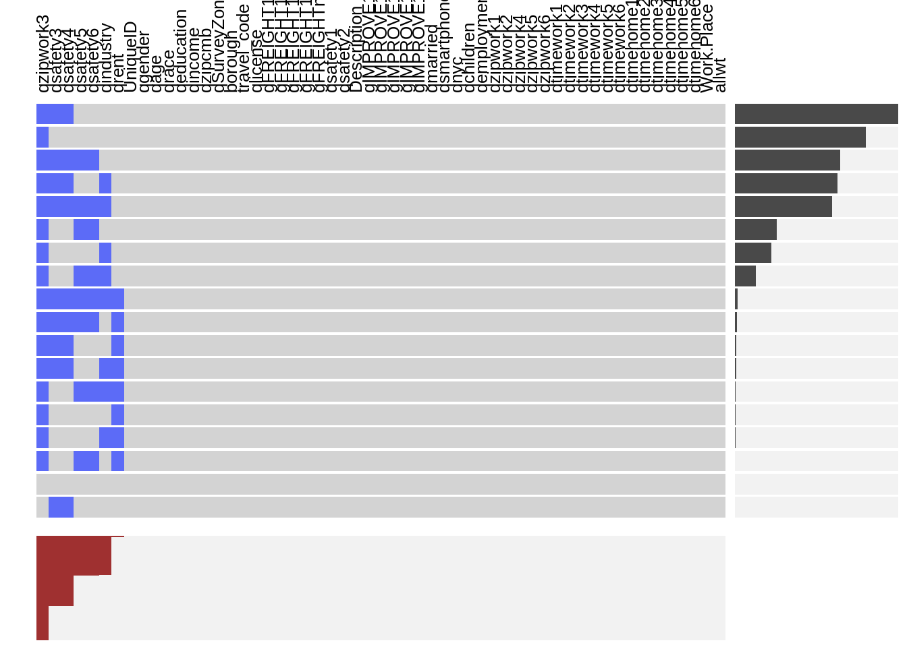

Chapter 4 Missing Value
The first step to explore the data is to analyze its missing pattern. We use visna graph from extracat package to visualize the missing pattern.

It can be observed that the variable qzipwork which describes the Zipcode of the locations where the respondents work has the most missing value because it’s an open question and a considerable amount of respondents do not report the location of their workplaces.
Also the qsafety variable group contains a large amount of missing values which will probably cause bias to our conclusions in analysis. qsafety mainly focuses on how the respondents feel about the safety of certain transportation. The 4 variables with high missing proportion are those concerning the safety of bicycle riding and driving. Naturally those who don’t drive or ride bikes would discard the questions. As these questions are not related to the topic of interests, so we will remove these variables and focus on the rest.
The other variables have few or no missing value on which we can perform further exploratory analysis safely.
Given the condition of our data, we will mainly concentrate on these varibales:
- dependent varibles:
- travel_code
- description
- socioeconomic variables:
- gender
- age
- income
- spatial varibles:
- qzipcmb (zipcode)
- borough
- certain group of variables related to our topics:
- qnyc (years of living in New York City)
- qchildren (how many children do the respondents have?)
- qrent (do the respondents own their house or rent their residence?)
- gFREIGHT varible groups (how often do the respondents receive deliveries at home? )
- weight:
- allwt (the weight for each record, provided by the survey)
In the process of exploration and analysis, we will also recode variables according to the situation and needs in analysis. The variables we focus on generally have very few missing values. So instead of replacing them with other values, we will just exclude them when conducting analysis and plotting.